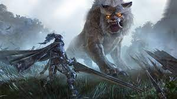

information about blackdesert online
Black Desert Online is a massiv multiplayer online rpg made by a korean studio it has been availabe in the United states through steam since late 2016. The game is well renowned albeit kind of small as it is known for its top of the line action combat system. There have been other companies try to make an action combat based MMO noone has had the ability tocreate one quite as successfully as BDO was able to. Side note the servers are still up and going strong it releases new updates weekly and has not showed any signs of slowing down.
BlackDesertOnline Classes
Classes the classes in BDO are pretty diverse with a large 26 playable classes with 24 of those classes having 2 different specializations that make the class play differently depending on which style you decide to pick. Also within the clases there is a large amount of customization options mainly focused on the body hair eyes etc and instead of using a basic page of 30-40 templates BDO usese a molding system where you can pull push drag and set the character up out you see fit and make many minute changes to the class. Now some of the negative the classes are genderlocked which does turn some people off of the game but that is partially because of how outfits and costumes work in the game as well as each character has a story tied into the class for example when playing a character called sage you arent one of many you are the specific one from the story. As the classes are intergrated fairly well into the world the full list will be found under the story information.